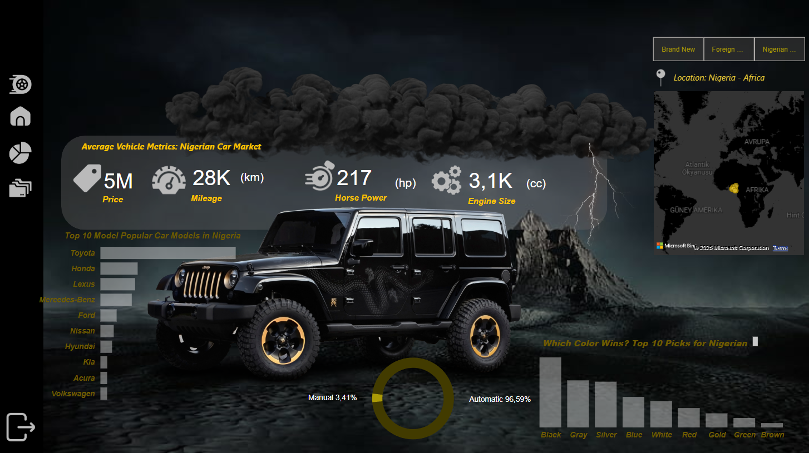
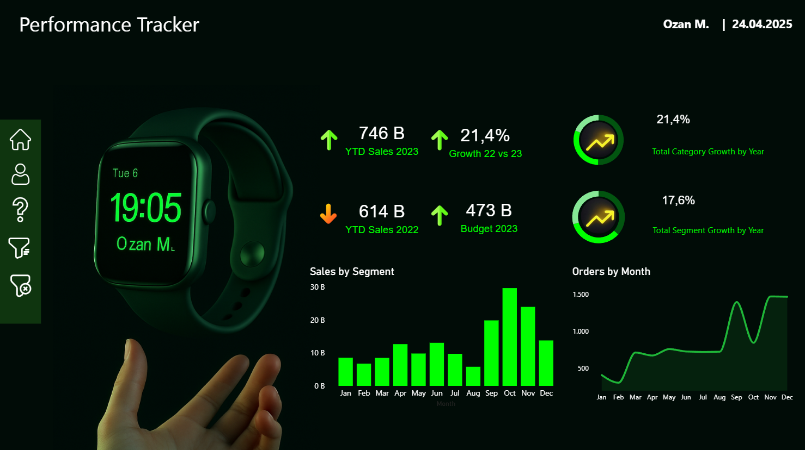
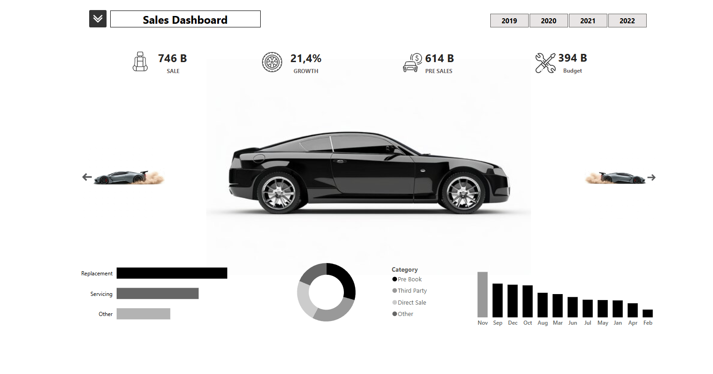
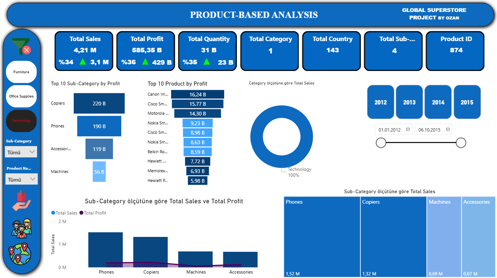
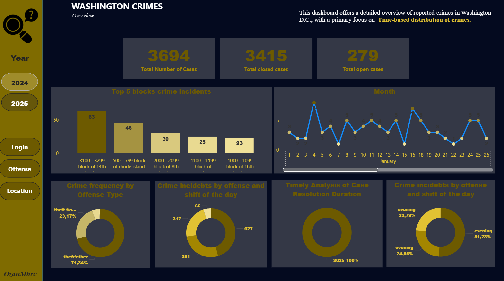
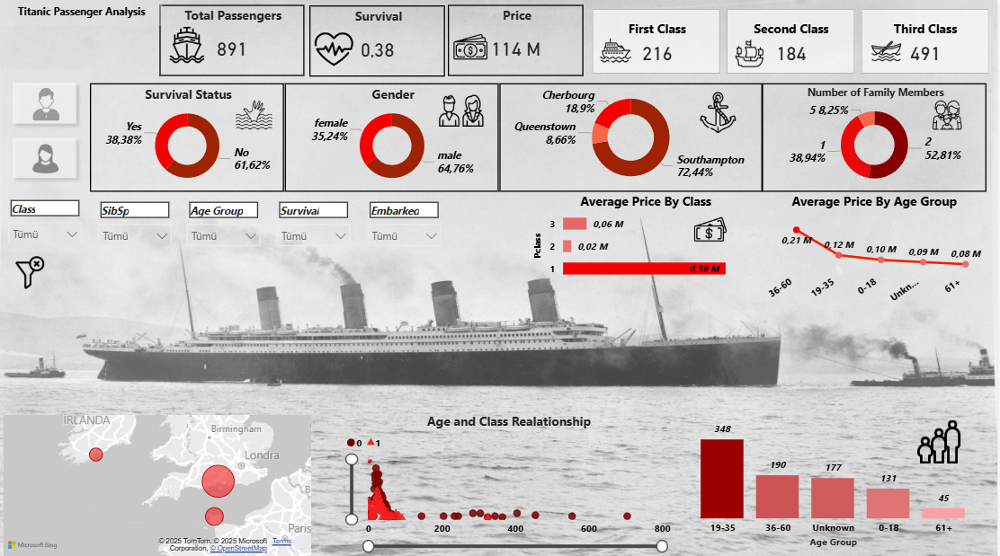
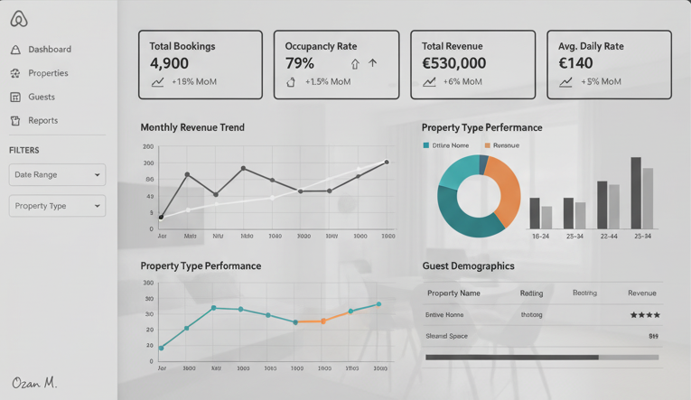
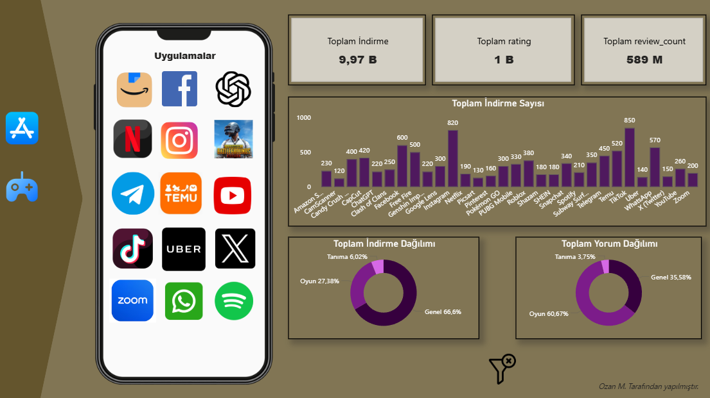
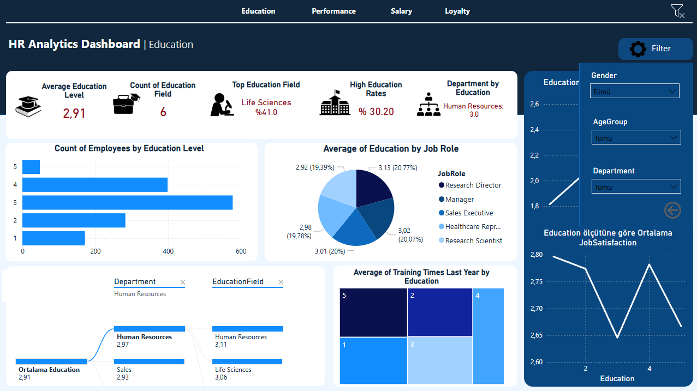
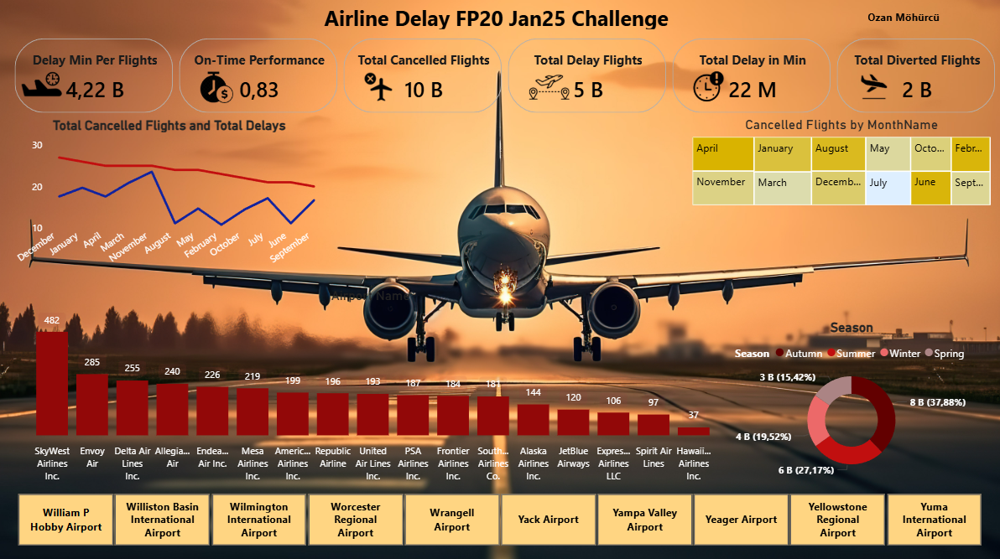

Nijerya Araba Pazarı
Nijerya Otomobil Pazarı Pano — stratejik pazar analizi için marka performansı, pazar payı ve tüketici eğilimleri gibi temel otomotiv metriklerini etkileşimli görsellerle sunar.

Nijerya Otomobil Pazarı Pano — stratejik pazar analizi için marka performansı, pazar payı ve tüketici eğilimleri gibi temel otomotiv metriklerini etkileşimli görsellerle sunar.

Kahve satış performansını, trendleri ve kategori dağılımlarını temiz ve görsel bir tasarımla analiz eden etkileşimli Power BI panosu.

Akıllı saat satış verilerini görselleştirerek satış performansını gerçek zamanlı takip eden pano. Satış trendlerini çeşitli ölçümler ve grafiklerle analiz ederek stratejik kararlar almanıza yardımcı olur.

Satış verilerini gerçek zamanlı analiz için görselleştiren Power BI panosu. Satış hedefleri, gelir, ürün performansı ve müşteri sayısı gibi temel metrikleri etkili görsellerle sunar.

Bir perakende mağazasının satış verilerini Power BI ile analiz edip görselleştirdiğimiz proje. Amaç, iş kararlarını desteklemek için satış trendlerini, müşteri davranışlarını ve popüler ürünleri belirlemekti.

Washington D.C. suç verilerini türe, konuma ve zamana göre görselleştirerek güvenlik stratejilerini geliştirmek için içgörüler sağlayan pano.

Yaş, sınıf, cinsiyet ve hayatta kalma oranları gibi temel yolcu verilerini görselleştiren Power BI panosu. Hayatta kalmayı etkileyen faktörler hakkında bilgi sağlar.

Operasyon ve lojistik süreçlerini KPI'lar, stok durumu, teslimat süreleri ve tedarik zinciri performansıyla interaktif grafiklerle görselleştiren dashboard.

Play Store mobil uygulama performansını KPI'lar, indirme sayıları, kullanıcı yorumları, değerlendirme puanları ve gelir trendleriyle interaktif grafiklerde sunan dashboard.

Çalışan performansı, devamsızlık, turnover, eğitim ve yetkinlik gelişimi gibi İK metriklerini görselleştiren dashboard. KPI'lar, grafikler ve interaktif filtrelerle stratejik karar desteği.

Havayolu uçuşlarındaki gecikme verilerini detaylı görselleştiren dashboard. Uçuş bazlı gecikme süreleri, havaalanı performansları, gecikme nedenleri ve zaman dilimleri interaktif grafiklerle sunulur.